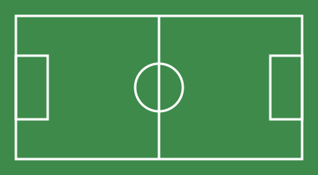

Club Social y Deportivo · Zona norte de Córdoba
Deporte, amistad y vida de barrio
Hace más de 50 años que en Los Algarrobos chicos, jóvenes y adultos comparten la cancha, la pileta y el salón.
- 650 socios
- 8 actividades
- 1974 año de fundación
¿Quiénes somos?
Somos un club de barrio de la zona norte de Córdoba. Hoy somos cerca de 650 socios entre chicos, jóvenes y adultos que comparten deporte, amistad y vida de barrio.

En el club podés encontrar:
- Deportes en equipo: fútbol, vóley y básquet.
- Natación y patín artístico.
- Ajedrez, funcional para adultos y yoga.
Nuestra historia
El club nació en 1974, cuando un grupo de vecinos se juntaba a jugar al fútbol en un terreno baldío rodeado de algarrobos. Con rifas, kermeses y mucho trabajo voluntario se compró el terreno y se levantó la primera sede.
Algunos hitos
- 1974 Fundación del club por vecinos del barrio.
- 1988 Inauguración del salón social.
- 2005 Construcción de la pileta climatizada.
- 2019 Renovación del playón polideportivo.
Dónde estamos
Calle Los Talas 2350, zona norte, Córdoba Capital.Teléfono: (0351) 555-1234
Correo: secretaria@losalgarrobos.org.ar
Llegás con las líneas de colectivo que pasan por la avenida principal del barrio.